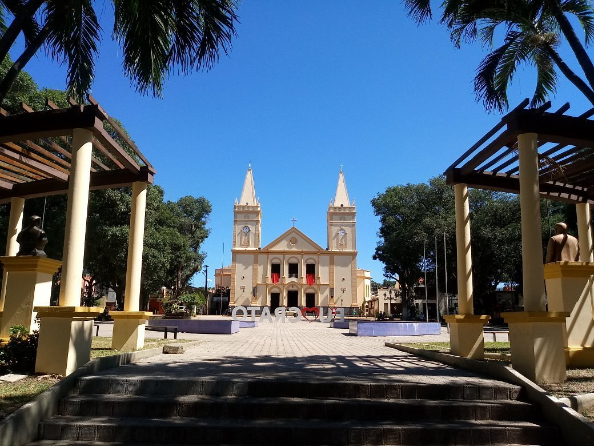

Boas Vindas
ao
Crato!
Localizado no sopé da Chapada do Araripe, no sul do Ceará, o Crato é um município que combina beleza natural, riqueza cultural e um clima acolhedor. Com uma população de aproximadamente 121.462 habitantes, a cidade destaca-se por suas paisagens diversificadas e um patrimônio histórico significativo.
Este guia turístico apresenta os principais pontos de interesse do Crato-CE e região, com informações sobre atrações naturais, culturais e eventos imperdíveis, proporcionando uma experiência única para quem deseja explorar o local.

Praça da Sé

Chapada do Araripe

Geopark Araripe